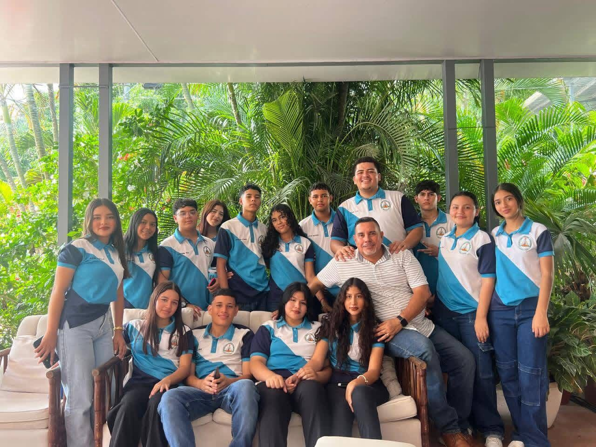

La Licenciatura en Mercadotecnia forma profesionales estratégicos y creativos capaces de diseñar campañas, gestionar marcas, realizar investigaciones de mercado y aplicar estrategias digitales. Con una duración de 4 a 5 años, esta carrera combina creatividad con el análisis de datos para influir en la percepción del consumidor y aumentar la competitividad de las empresas. Puntos Clave de la Carrera:Perfil del Estudiante: Creativo, sociable, persuasivo, proactivo y con interés en el comportamiento humano y la tecnología.Habilidades a Desarrollar: Gestión de marcas (branding), marketing digital (SEO/SEM), investigación de mercado, comunicación persuasiva, neuromarketing y planes de ventas. Campo Laboral: Agencias de publicidad, consultoría de marketing, gerencias de marca o ventas, community managers, analistas de datos y emprendimiento.Duración: Generalmente entre 4 y 5 años